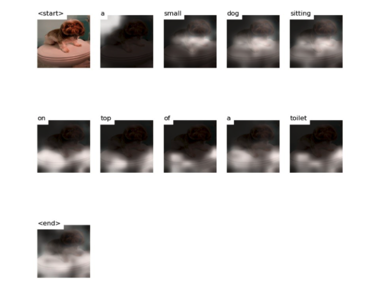

Image captioning is an interesting area to investigate because it is a combination of object detection and natural language processing, which corresponds to the application of convolutional neural network (CNN) and recurrent neural network (RNN). A good image captioning model mimics the action of a human that it is able to understand and describe what an image includes. In image captioning area, attention map is a widely used technique. With attention map, the model knows which part in the image it needs to pay more attention to when generating the next word in the caption. In our project, we also implemented this attention map technique. At the same time, it is important that an image captioning model is robust, which means it could make reasonable adjustments to the caption it generates when the input image is changed. In our project, we also implemented an image perturbation model that alters the input image to evaluate the robustness of our image captioning model.
Image captioning models are complex because they work on object detection as well as caption generation. When these models fail it is hard to understand where and why they fail. To explain how an image captioning model works, we use attention maps to visualize the relationships between generated words and objects in an image. At the same time, it is also challenging to know how a caption will change if certain object in an image is changed. In this case, we implemented our image pertubation model and calculated the sentence distance between raw caption and changed caption
At the very beginning, we wanted to train the image captioning model with the combination of the COCO dataset and the Visual Genome dataset. After we realized it is hard to combine them, we decided to only use the COCO dataset to train this model. The reason why we use the COCO dataset in the end is that COCO is large and comprehensive enough to train our model. It contains 330k images and 5 captions per image. We use the CelebA (CelebFaces Attributes Dataset) dataset to train our image perturbation model. CelebA is a large-scale face attributes dataset with more than 200K celebrity images, each with 40 attribute annotations. The images in this dataset cover large pose variations and background clutter.
With attention maps, we could visualize how our image captioning model generate that specific caption based on objects in an image. We used deterministic "soft" attention as the research paper Show, Attend, Tell does. This differs from stochastic "hard" attention as during the learning process we do not sample attention locations each time but can instead take the expectation of a context vector. A benefit of using deterministic attention is that the whole model is smooth and differentiable so we can use standard back-propagation to train the model. Using these attention maps we can see where the model is looking when it outputs a given word and with this information we can better understand the model especially when it makes mistakes. Let's take a look at an example of attention maps. In our first example we can see the model captions the image well. Looking at the attention map it is clear the model is looking at the correct sections of the images as when it generates the word "dog" its attention is on the dog's body and when it generates the word "toilet" its attention is on the toilet.
The generated caption is: a small dog sitting on top of a toilet
Once we produce the attention maps for a given image and its produced caption, we extend on this idea by removing an object from the source image and regenerating the produced caption to assess how it differs from the original. The method we choose to remove objects from an image is called Generative Inpainting. Given an input image and a binary mask, generative in-painting uses a pre-trained gated convolutional neural network to remove the part of the image in the mask and replace it with the model’s best guess of what the original image would look like without the masked portion. For example we can take an image of several surfers riding a wave, draw a white mask image where one of the surfers is located, then remove that surfer from the image by inferring what the background image should look like.
In order to determine how important an object is to the overall caption, we compare what the caption looks like with and without that object. We can make this comparison quantitatively using a pre-trained BERT model that converts sentences into vectors, then compare those vectors using the cosine similarity metric. Let's take a look at an example of our object importance visualization:
We trained our own image captioning model with the COCO dataset and evaluated the model with BLEU metric. With the image captioning model, we generated attention maps to visualize and explain to the audience how a caption is generated by our model step by step. We also implemented our image perturbation model and trained it with the COCO dataset. It has decent performance on removing an object from an image and refilling it. With the image perturbation model, we investigated how an caption can be changed if an object is removed from the raw image. Furthermore, we investigated and visualized the object importance by assigning an importance score to each object in an image. In the future, we want to make our model detect adversarial and see how much the caption changes. We also plan to add a segmentation prediction model to eliminate the need for pre-defined annotations. We hope our work will let more people know about Explainable AI.